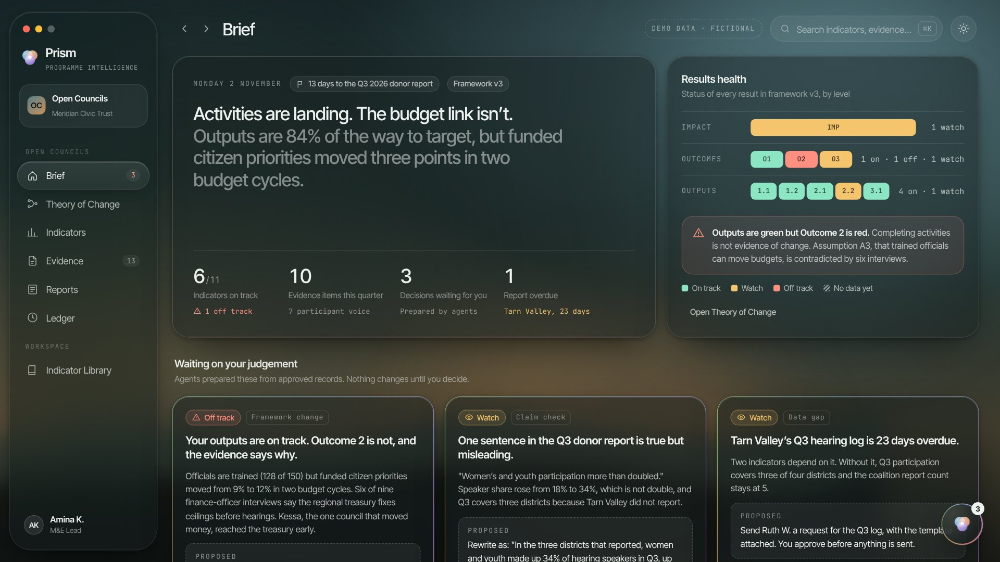
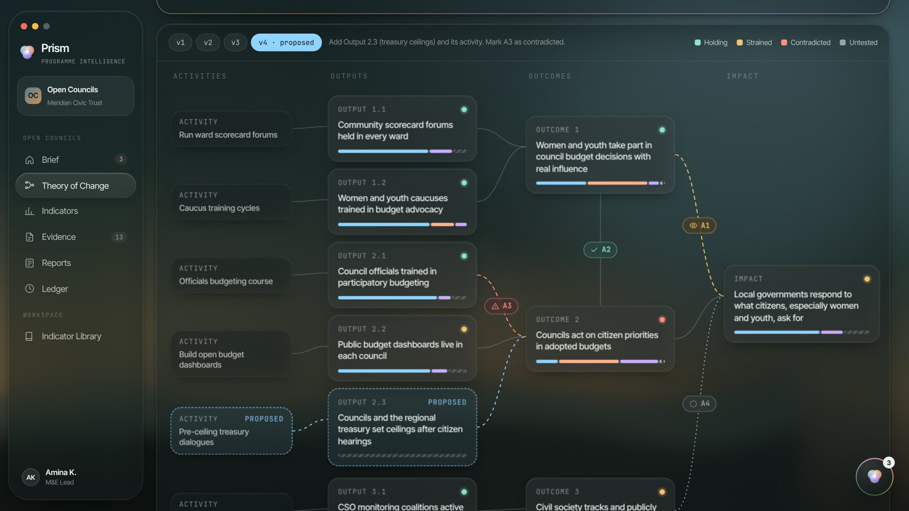
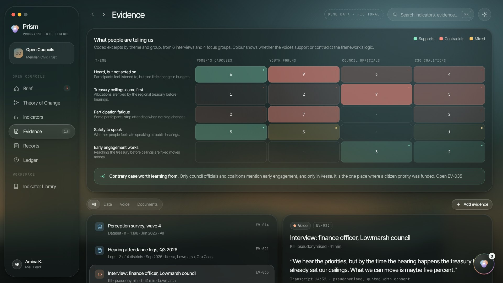
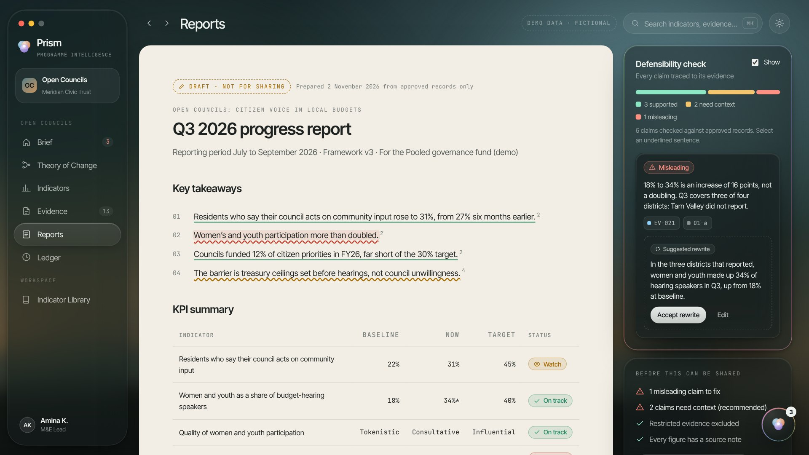

Green outputs, red outcomes
Trainings held, forums run, people reached. Dashboards light up, while the change the programme exists for stays flat and nobody can say why.
Monitoring and evaluation teams can count what they did. The hard part is showing what changed, and why, in a way a funder, a board or a community can trust.
Prism keeps every number, interview and document joined to the result it supports. Its agents prepare the analysis. Your team makes the calls.
Scroll to exploreTrainings held, forums run, people reached. Dashboards light up, while the change the programme exists for stays flat and nobody can say why.
Every donor report is assembled again by hand, from spreadsheets, transcripts and memory. The interviews that explain the numbers are reduced to one quote.
Caveats fall away on the way to the page. A rise from 18% to 34%, reported by three of four districts, becomes “more than doubled”.
Each one answers a question an M&E lead asks every week. Open any of them in the live demo, which runs on a fictional programme.
Open Councils trains council officials and runs citizen budget hearings. Every output is green. Funded citizen priorities moved three points in two years. Here is how Prism finds out why.

Not a wall of charts. The Brief says what changed and puts the decisions that need your judgement first, each prepared by an agent with its sources, confidence and limits.

Six of nine interviews say the regional treasury fixes budget ceilings before hearings. The assumption is marked contradicted, a change is proposed, and you approve version four with your reason. Version three stays on the record.

Interviews and focus groups are coded by theme and group, so you can see where people support the logic and where they push back, including the one council that broke the pattern.

The draft builds itself from approved records. Prism traces each sentence to its evidence, flags the ones that overreach, and keeps the report from going out for review until they are fixed.
Numbers, quotes and findings stay linked to the records behind them, from the first upload to the final report.
A missing report is drawn and labelled as missing. A survey that runs twice a year simply skips quarters.
Agent output is labelled, sourced and changes nothing until someone accepts it. Every decision lands in the Ledger.
Protection records are never read by agents, never quoted and never drafted into a report. Opening one is logged.
Every plan includes the whole workflow: Theory of Change with versioning, the indicator library, the M&E plan, evidence and qualitative coding, report checks and the Ledger. Plans differ by team size, programmes and support.
For independent consultants and small teams.
For established NGO programme teams.
For larger NGOs running many projects.
For INGOs, funders, government and institutions.
Prices in US dollars, billed monthly. Agent use is metered against an allowance included in each plan; you see any overage before it is charged, and nothing is ever sold as unlimited. These are indicative prices for pilot organisations.
One-off services, quoted per organisation.
The demo runs on Open Councils, a fictional governance programme. Walk through it, approve a framework change and fix a misleading claim yourself.